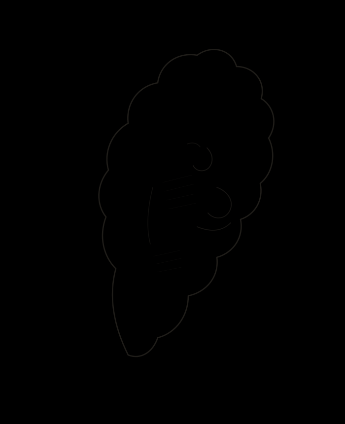
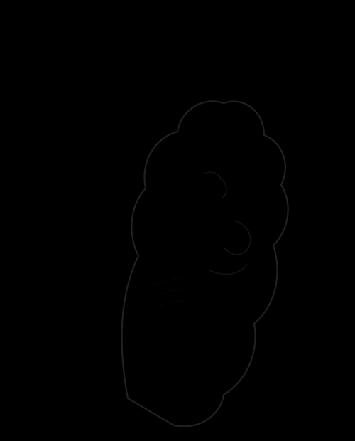

Grafito sobre papel
El trazo que queda
antes del movimiento.
Mary's dibuja en grafito lo que suele pasar desapercibido: el pliegue de una tela, la quietud de una mano, el instante justo antes de que algo cambie de forma.
Ver la obra
Obra reciente
Cada pieza está hecha a mano con grafito sobre papel de algodón. Tocá una imagen para ver el detalle.

Sobre Mary's
Mary's trabaja exclusivamente en grafito, un material que obliga a decidir rápido: no hay color para distraer, solo la línea y lo que se deja sin dibujar.
Cada pieza empieza sin boceto previo en lápiz de color ni guías digitales. El papel se trabaja directo, capa sobre capa, hasta que la imagen encuentra su propio punto de reposo.
Actualmente toma encargos de retrato y estudios por pedido. El contacto está más abajo.
Encargos y consultas
Para encargos, consultas sobre una pieza o disponibilidad, escribí directamente.
hola@marys-arte.com